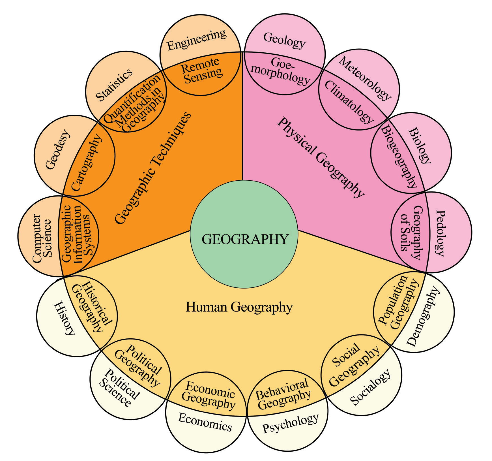

Sometimes as an interdisciplinary field, Geography provides a base for understanding other concepts in social sciences. For example, when studying human culture, Geography provides a basis for understanding spatial distribution and how people interact with the environment. Geography is also related to political science, especially when describing political boundaries, regions, population size and distribution of resources in different locations. Figure 1.2 illustrates the relationship between Geography and other disciplines.

Activity 1.7
 Activity 1.7
Activity 1.7Visit a nearby area and observe different activities carried out.
Make a list of activities, then:
(i)
Explain how such activities relate with geography.
(ii)
Indicate under which disciplines such activities fall.
5